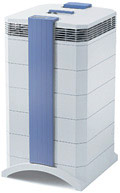
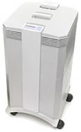
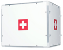

Residential
The most effective air filters, vog filters and whole building filter systems at the best prices. Design of whole building air purification systems, fresh air delivery systems, and vog safe-rooms testing air filter effectiveness using laser technology. Indoor air quality (IAQ) monitoring for private and public buildings. Research and information about vog, vog’s health affects and health solutions. Design of whole building air purification systems, fresh air delivery systems, and vog safe-rooms testing air filter effectiveness using laser technology.HealthPro Plus

Same as HealthPro, plus a V5-Cell gas phase filter for gaseous contaminants, odors and light tobacco smoke.
#1 for Allergies and Asthma
The HealthPro Plus is IQAir’s best selling room air purifier. It combines four advanced filtration technologies to effectively remove a large variety of particulate and molecular air pollutants. Due to its wide effectiveness range it is equally well suited for health conscious individuals as those suffering from a range of respiratory ailments.
The molecular effectiveness makes this device also suitable for asthma sufferers, as asthma sufferers are often sensitized to molecular irritants, as well as allergens.
The HealthPro Plus has received more #1 reviews than any other air purifier.
HealthPro Plus Awards:
* Allergy Buyer’s Club: Category Winner
* Wired Magazine Test: Best Air Purifier
* Consumer Guide: Best Buy
* Reviewboard Magazine: Product of the Year
* Consumer Digest: Best Buy
* Test Magazine: Category Winner
* Newsweek Odor Tested
Price: $939.00
GC MultiGas
(Ideal for Oahu, Maui, Kona)
The Wide Spectrum Chemical and Odor Control Specialist
The GC MultiGas has been customized for wide spectrum molecular and particulate contaminant control. Just like a professional gas mask, the GC MultiGas maximizes molecular filtration for a wide variety of gaseous chemicals and odors with its advanced filter cartridge design. And while gas and odor control is a particular strength of this systems, the GC MultiGas also offers excellent filtration for particles. The GC MultiGas is our bestseller for individuals with multiple chemical sensitivity (MCS). If you need more customized control of specific gaseous chemicals, have a look at the GC Series overview.
Price: $1,299.00
GC Chemisorber

(Ideal for Hilo)
The Wide Spectrum Chemical and Odor Control Specialist
The GC MultiGas has been customized for wide spectrum molecular and particulate contaminant control. Just like a professional gas mask, the GC MultiGas maximizes molecular filtration for a wide variety of gaseous chemicals and odors with its advanced filter cartridge design. And while gas and odor control is a particular strength of this systems, the GC MultiGas also offers excellent filtration for particles. The GC MultiGas is our bestseller for individuals with multiple chemical sensitivity (MCS). If you need more customized control of specific gaseous chemicals, have a look at the GC Series overview.
Price: $1,239.00
HealthPro
The HealthPro features the same advanced micro- and nano-particle filter technologies as the HealthPro Plus, however without the gas and odor filter (V-5 Cell). The HealthPro effectively removes every type of particulate air pollutants, including all common allergens. The system has a spare compartment that can at any time be upgraded with the V-5 Cell (wide-spectrum gas and molecular filter) to help eliminate gaseous chemicals and odors. This makes the HealthPro the ideal choice for allergy sufferers and other health-conscious individuals that need ultra high-efficiency particle removal with the option of later adding gas and odor removal.
Price: $839.00
Perfect 16
The Perfect 16 is the only system that is rated a perfect MERV 16, the highest industry rating for whole-house air cleaning. It has the highest filtration efficiency for removing bacteria, pet allergens, mold spores, dust, pollen and other contaminants that can be detrimental to your health. The Perfect 16 is the perfect system for people who suffer from allergies, asthma or for people who just want to breathe healthier air and have a healthier lifestyle. Transform your house into a healthy home today!
Price: $2,695.00 +shipping (3 Ton)
Price: $3,195.00 +shipping (5 Ton)
CleanZone Series

The IQAir CleanZone is a modular ultra-high efficiency air purification system that was developed for indoor environments that require the highest level of air quality possible. The CleanZone systems can be ducted as a stand-alone system or into an existing forced air heating, ventilation and/or air conditioning (HVAC) systems. The CleanZone is designed to purify up to 1200 cfm of air passing through a duct system with an efficiency of over 99.97% at 0.3 microns (size of bacteria) and over 99.5% at 0.003 microns (smaller than viruses). As a result, CleanZone systems are capable of retaining 10 times more particles than the highest MERV rated filter systems on the market.Thanks to sophisticated digital fan technology the CleanZone eliminates the pressure drop that is typically associated with high-efficiency whole-house air cleaners. An intelligent filter life monitor tracks life of every filter based on actual system usage. The CleanZone’s extremely large filters allow for the longest filter life in the industry. The MERV 16 pre-filter typically lasts for three years. The life of the HyperHEPA filter is typically six years. CleanZone systems require professional installation through a licenced HVAC contractor.